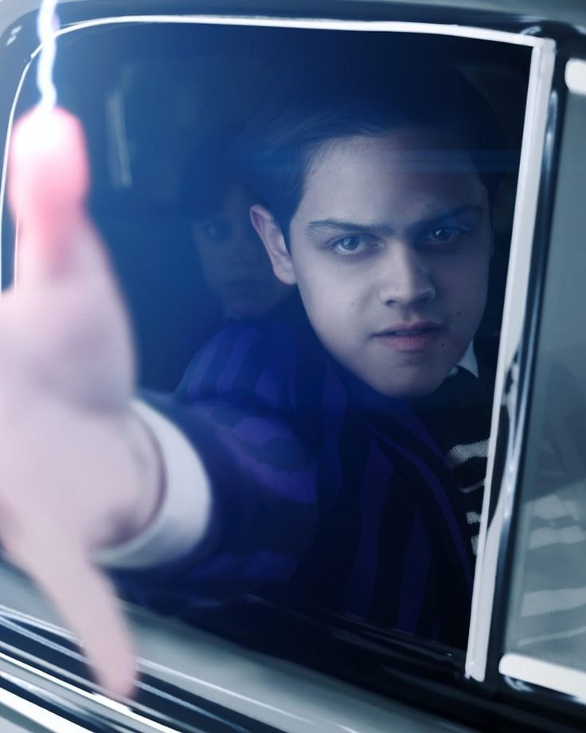
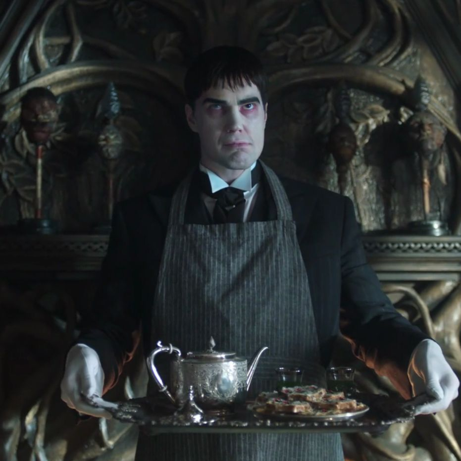
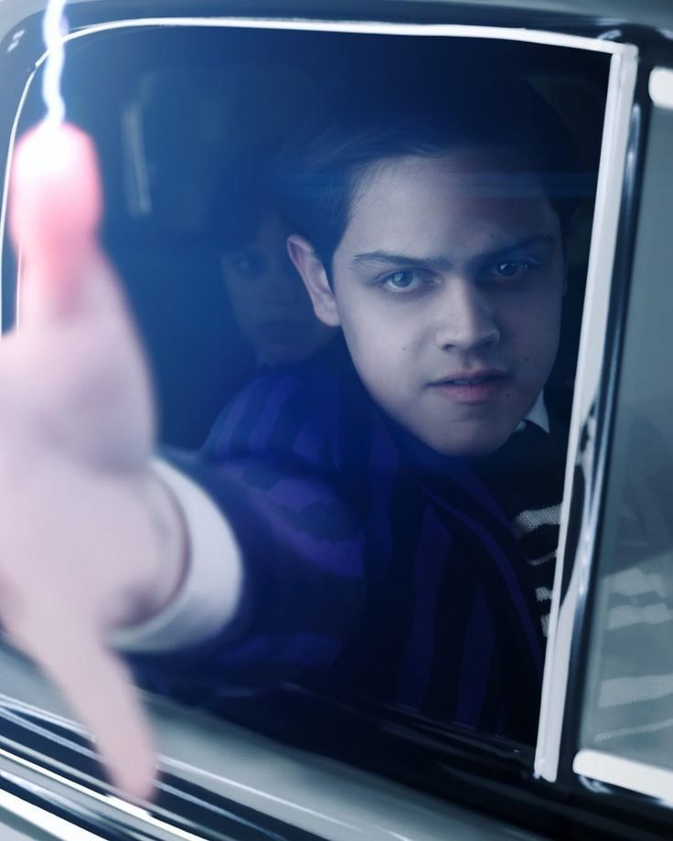
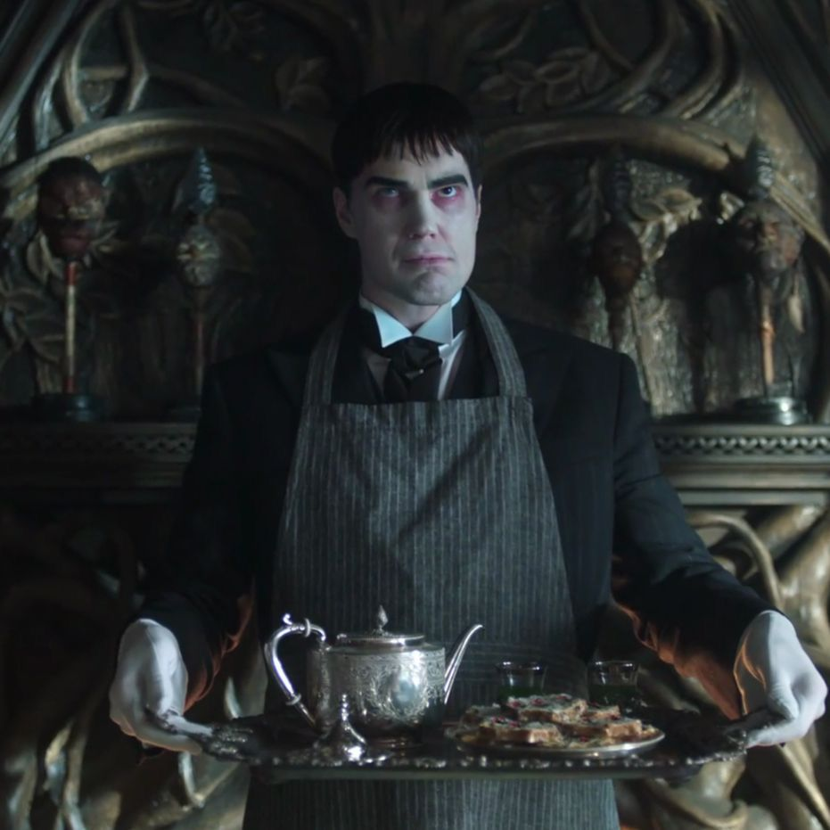

The Addams Family
Keluarga Wednesday Addams adalah keluarga fiksi yang menyukai hal-hal aneh dan mengerikan, yang terdiri dari ayah Gomez Addams, ibu Morticia Addams, adik laki-laki Pugsley Addams, dan anggota lainnya seperti Nenek, Paman Fester, dan pelayan setia mereka, Thing. Keluarga ini dikenal karena penolakan mereka terhadap norma sosial dan pandangan dunia yang unik.
Ayah: Gomez Addams adalah pria yang lembut, penuh gairah, dan sangat protektif terhadap keluarganya.
Ibu: Morticia Addams adalah seorang cenayang yang kuat dan ahli pedang.
Adik Laki-laki: Pugsley Addams adalah adik Wednesday yang sering menjadi sasaran keisengan (terutama di serial sebelumnya), tetapi mulai menemukan kekuatannya sendiri.
Pelayan Pribadi: Lurch adalah pelayan setia keluarga Addams. Kehadirannya selalu mengintimidasi karena sifatnya yang tidak banyak bicara. Dengan fisik tinggi besar, Lurch memiliki kekuatan fisik yang luar biasa tangguh.